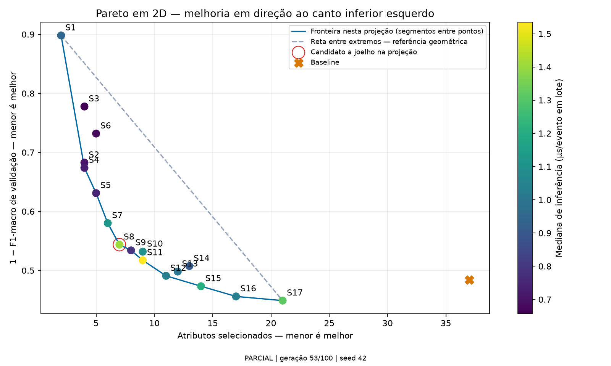
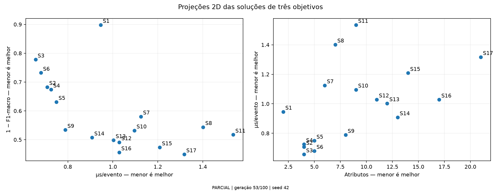
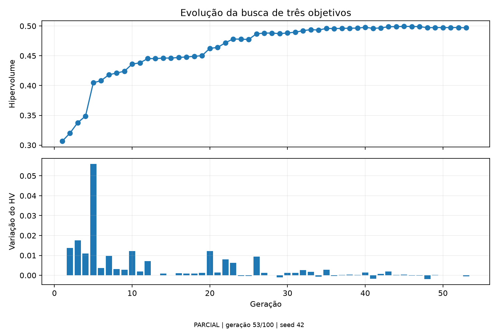

# Meu relatório da MLP conjunta PARCIAL | geração 53/100 | seed 42 Eu treino uma MLP com dados das três bases. Eu separo treino, validação e teste por grupos de atributos idênticos. Eu seleciono os atributos na validação. Eu uso o teste somente após fixar as escolhas. ## Como eu leio o Pareto Eu minimizo erro (1 − F1-macro), proporção de atributos e segundos por evento. Eu mostro somente gráficos 2D. Melhorar erro e quantidade de atributos significa avançar para o canto inferior esquerdo. Eu uso a cor para representar o tempo. Uma solução pode parecer dominada em dois eixos e continuar não dominada nos três. Eu ligo apenas os pontos não dominados da projeção; os segmentos não são resultados intermediários medidos. Eu não imponho formato de barriga nem suavizo os pontos. Minha verificação geométrica: Há um candidato geométrico a joelho abaixo da reta entre extremos. Não é prova de ótimo, convergência ou escolha automática. Eu calculo o HV nos três objetivos, com tempo transformado por t/(t+t_ref), referência fixa (1.1, 1.1, 1.1) e t_ref=1.63122935e-06 s/evento, medido no baseline. Na otimização eu uso o tempo original. Eu não comparo esse HV ao do experimento anterior de dois objetivos. ## Como eu leio as matrizes e o tempo Eu mostro contagens e percentuais por linha; a diagonal percentual é recall da classe, não acurácia geral. Eu incluo precisão, recall, F1 e suporte nos CSVs. Um traço identifica classe sem exemplos no teste daquele painel. Eu mantenho o vocabulário de classes fixo do treino no macro-F1, inclusive nas tabelas por base. Eu meço padronização + previsão, com lotes e repetições fixos, excluindo leitura de disco. Eu registro mediana e máximo observado do tempo médio por evento em lote; isso não é a maior latência individual. Eu não afirmo generalização para uma quarta base nem estabilidade entre seeds.


